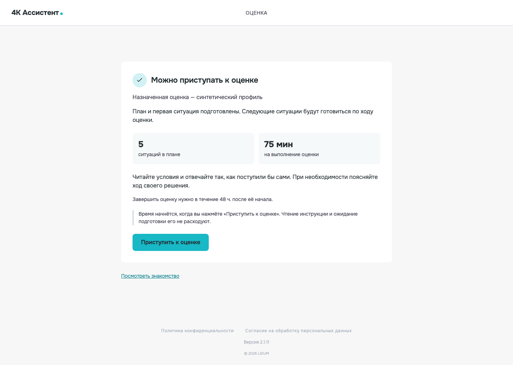
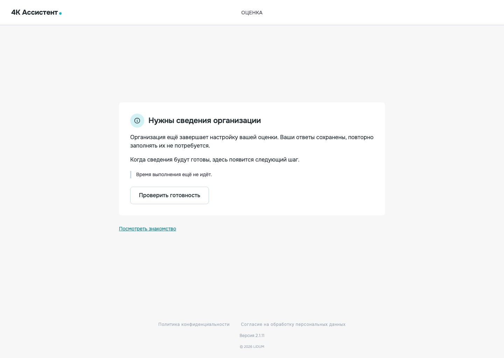
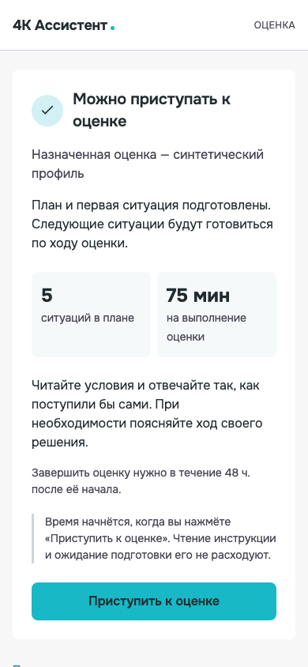
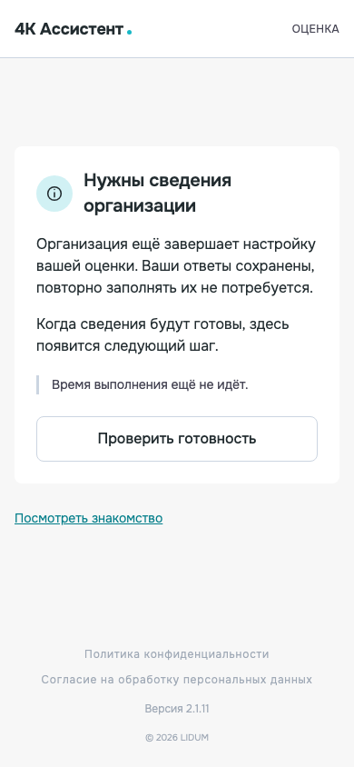

ready · 1440px



Статические снимки ветки PR224, controlled API; это не интерактивное приложение и не приёмка TEST. Изображения открываются в полном размере.
В ready убран повтор перерывов/возврата; process сохраняет действующие правила. Organization ниже — после завершения текущего знакомства, с историей и без выхода. Вариант до знакомства проверен отдельно.
Продукт сохраняет версию2.1.11 и назначенные5/75/48; reference использует demo8/60/72. Различия описаны в ADD02_CHECKS.md. Мобильная прокрутка до кнопок/истории/подвала проверена отдельно от кадра.
Историческая галерея ADD01 — прежний ready с повтором не является текущим результатом.





